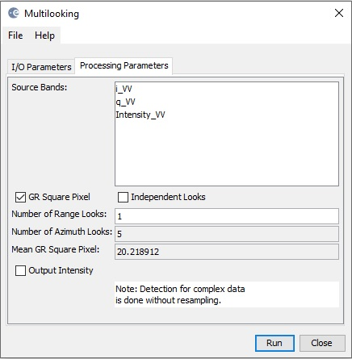

| Multilook | |

GPT operator: Multilook. Generated from the operator source; parameter names are those used in GPT and graph XML.
| Parameter | Type | Default | Allowed values | Unit | Description |
|---|---|---|---|---|---|
sourceBands | String[] | The list of source bands. | |||
nRgLooks | int | 1 | [1, *) | The user defined number of range looks | |
nAzLooks | int | 1 | [1, *) | The user defined number of azimuth looks | |
outputIntensity | Boolean | false | For complex product output intensity or i and q | ||
grSquarePixel | Boolean | true | Use ground square pixel |